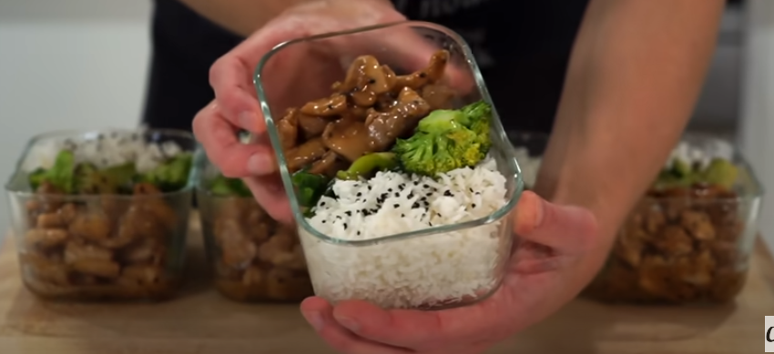

Lemon Chicken and Rice

Great tasting recipe that can be done in just over half an hour, very nutritious and and comes out to 5 portions
Ingredients
- Olive oil
- Broccoli
- Peas and corn
- 1kg chicken thighs, boneless & skinless, diced
- 3 garlic cloves, minced
- 2 lemons
- 80g or 1/3 cup of honey
- 2 1/2 onion powder
- Soy sauce
- 12g corn flour
- 350g Basmati Rice, washed
Steps
- Cut chicken thighs
- In a mixing bowl, add: 125ml water, 3 minced cloves of garlic, Squeeze in 2 lemons, 80ml honey,
2 1/2 onion powder, 30ml soy sauce, oil, 12g corn flour, season with salt and pepper then whisk
- Add rice and 750ml water to a pot and add salt, cook on high heat. When it starts boiling, put it on low heat and cook for 14 more minutes
- Place another pan on medium high heat, add olive oil, dump in vegetables, cook and stir around for 8 minutes, add 80ml water, put the lid on and cook for 2 more minutes, mix around and plate your veggies afterwards
- After 14 minutes turn off the heat on the rice and leave the lid on for 4 more minutes
- Place the same pan you cooked the vegetables in over high heat, add olive oil, put the chicken thighs in, mix and cook regularly for 10 minutes, then mix and add the sauce in, mix for 2 minutes
- Plate the chicken, vegetables and rice and enjoy